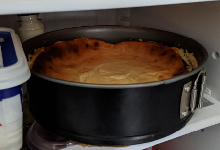

| Zutaten für die Springfrom (24-26cm): | |
| Boden, Variante Petit Beurre: | |
| 15g | gemahlene Mandeln |
| 40-50g (7-9 Stück) | Petit Beurre |
| 1 Prise | Salz |
| Gewürz, z.B. Lebkuchen oder Glarner Gewürz-Zucker | |
| 30g | Zucker |
| 2 El | Sonnenblumenöl |
| oder | |
| 50g | Weiche Butter |
| Boden, Variante Knetteig: | |
| 150g | Weizenmehl |
| 75g | Zucker |
| 1 Briefchen | Vanillin-Zucker |
| 1 Prise | Salz |
| 1 | Ei Grösse M |
| 75g | weiche Butter oder Margarine |
| Füllung: | |
| 2 | Eier |
| 200g = 1 Becher | Schmand (Sauerrahm mit 24% Fett) |
| 500g | Magerquark |
| 100g | Zucker |
| 1 Pack | Zitronenzeste (besser 1 abgeriebene Zitrone) |
| 30g | Weissmehl |
| 50g | Milch |
| 50g | Rosinen |
Boden der Springform mit Backfolien abdecken. Backofen auf 180°C vorheizen. (Ober-/Unterhitze)
Entweder den Boden mit Petit Beurre zubereiten oder den Knetteig zubereiten.
Fett / Butter in einer Schüssel schmelzen (ev. Springformrand fetten), Kekse dazubrösmeln und alle Zutaten mischen. Auf dem Boden der Springform gleichmässig verteilen und leicht festdrücken.
Mehl in einer Rüschüssel mit den anderen Zutaten mischen und zu einem Teig zusammenführen.
2/3 des Teiges auf dem Boden der Springform ausrollen und den Springformrand darumstellen.
Übrigen Teig zu einer langen Rolle formen. Die Rolle als Rand auf den Teigboden legen und so an die Form drücken, dass ein etwa 3 cm hoher Rand entsteht.
Den Teigboden mehrmals mit einer Gabel einstechen. Die Form auf dem Rost in den Backofen schieben und den Boden vorbacken.
Einschub: unteres Drittel
Backzeit: etwa 6 - 10 Minuten, bis der Boden etwas dunkler ist als Petit Beurre
Die Springform nach dem Vorbacken auf einen Kuchenrost stellen und den Boden abkühlen lassen. Die Backofentemperatur auf 160°C reduzieren.
Schmand mit Zucker und Eiern gut vermischen. Mehl und Zitronenzeste/Zitronenschale zugeben und verrühren. Quark beigeben und verrühren (von Hand) und je nach Konsistenz Milch zugeben bis cremige Konsistenz.
Eiweiss steif schlagen und unter die Quarkmasse heben. (Kann man sich sparen)
Rosinen auf dem Springformboden verteilen oder unter die Masse mischen. Die Masse gleichmässig auf den vorgebackenen Boden streichen. Die Form wieder in den Backofen schieben.
Einschub: unteres Drittel
Backzeit: etwa 75 Minuten
Den Kuchen nach der Backzeit noch 15 Min. bei leicht geöffneter Backofentür im ausgeschalteten Backofen stehen lassen. Anschliessend den Kuchen auf einen Kuchenrost stellen und in der Form erkalten lassen. Den Formenrand entfernen (sonst nimmt der Kuchen einen metallischen Geschmack an) und kühl lagern.
Den Kuchen zugedeckt oder im Kühlschrank lagern. Das gibt eine leicht feuchte und dadurch glänzige Oberfläche.
Käsekuchen nach Dr. Oetker - personalisiert von Sandra Keller
Zum 86-sten Geburtstag gebacken am 2.2.2020. Dazu nach 30 Minuten Backzeit ein paar Zuckerdeko-Sterne auf der Oberfläche verteilt und aus grossen Erdbeeren-Hälften die Zahlen 8 und 6 ausgestochen. Der neue Geburtstagskuchen für Senioren: mit viel Protein für den Muskelerhalt!